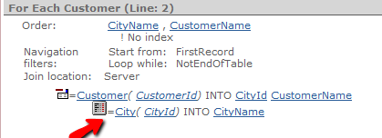
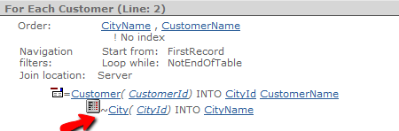

When there is a For Each command (or grid, etc.) that involves a join between several tables, GeneXus automatically determines the Join Type, that is to say, how this Join will be implemented between them (natural or outer). In addition, it indicates if it can be solved in the database server or the application server (Join Location). Join TypeThe type of join is set based on the nullability of the attributes that make up a Foreign Key. If the foreign key can be null, an outer (or left) join will be made; otherwise, a natural (or inner) join will be used. Navigation reports show the "=" symbol for natural joins and the "" symbol for outer joins (see examples below). Notes
Join LocationJoins involved in a For Each command (or grid, etc.) can be "solved" in the database server (DBMS) or in the client (Application Server) according to the logic of the generated object. This is what we see in the navigation report as Join Location: client | server. In general, it tries to solve it in the server for performance reasons but there are some exceptions, for instance:
In case multiple tables are joined, Join location will be server if at least two tables are joined in the database server. Example Considering the following Transactions:
City
{
CityId*
CityName
}
Customer
{
CustomerId*
CustomerName
CityId (Nullable = No)
}
If we have a For Each that joins the two tables: For Each CustomerName CityName ... Endfor The detailed navigation will be as follows:  Note the icon when reading the City table (natural join). If, instead, it has been set that a Client may not have an assigned city (the CityId foreign key in Customer has the Nullable property set to Yes), the join between the tables will be an outer join:  As we can see, in both cases the join is performed in the server.
|
| Backlinks |
| Base Transaction clause |